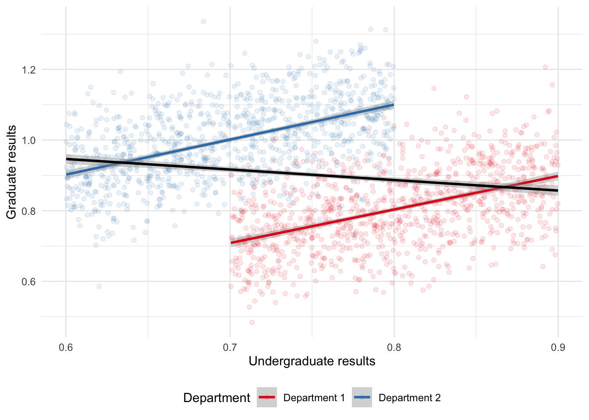
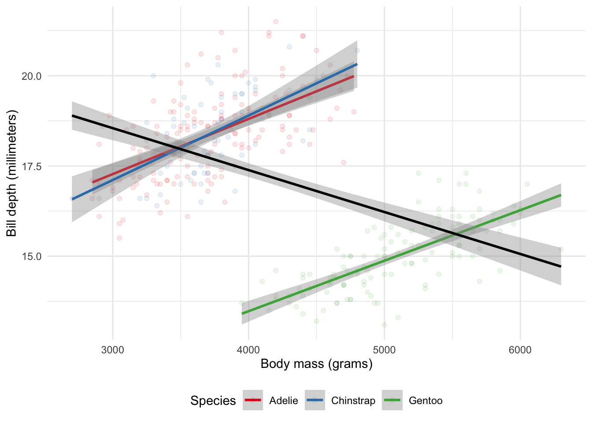
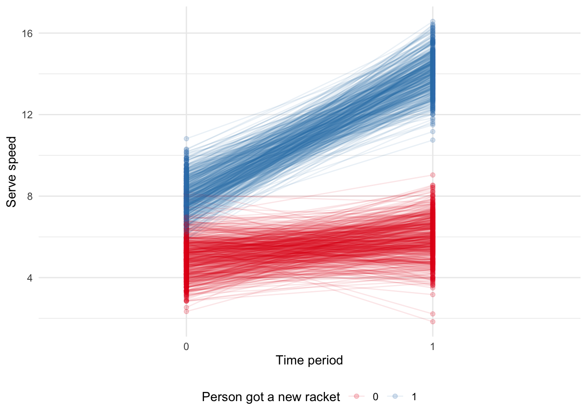

library(DiagrammeR)
DiagrammeR::grViz("
digraph {
graph [ranksep = 0.2]
node [shape = plaintext, fontsize = 10, fontname = Helvetica]
x
y
edge [minlen = 2, arrowhead = vee]
x->y
{ rank = same; x; y }
}
", height = 200)15 Causality from observational data
Required material
- Read BNT162b2 mRNA Covid-19 Vaccine in a Nationwide Mass Vaccination Setting, (Dagan et al. 2021)
- Read The Effect: An Introduction to Research Design and Causality, Chapters 18 ‘Difference-in-Differences’, 19 ‘Instrumental Variables’, and 20 ‘Regression Discontinuity’, (Huntington-Klein 2021)
- Read Understanding regression discontinuity designs as observational studies, (Sekhon and Titiunik 2017)
Key concepts and skills
- Being able to put together DAGs.
- Essential matching methods and the weaknesses of matching.
- Implementing difference in differences.
- Identifying opportunities for instrumental variables and implementing it.
- Challenges to the validity of instrumental variables.
- Reading in foreign data.
- Understanding regression discontinuity and implementing it both manually and using packages.
- Appreciating the threats to the validity of regression discontinuity.
Key packages and functions
broom(Robinson, Hayes, and Couch 2021)DiagrammeR(Iannone 2020)estimatr(Blair et al. 2021)haven(Wickham and Miller 2020)MatchIt(Ho et al. 2011)modelsummary(Arel-Bundock 2021)rdrobust(Calonico et al. 2021)scales(Wickham and Seidel 2020)tidyverse(Wickham 2017)
Key functions
DiagrammeR::grViz()estimatr::iv_robust()haven::read_dta()MatchIt::matchit()modelsummary::datasummary_skim()modelsummary::modelsummary()poly()rdrobust::rdrobust()scales::dollar_format()
15.1 Introduction
Life is grand when we can conduct experiments to be able to speak to causality. But there are circumstances in which we cannot run an experiment, but nonetheless want to be able to make causal claims. And data from outside experiments have value that experiments do not have. In this chapter we discuss the circumstances and methods that allow us to speak to causality using observational data. We use relatively simple methods, in sophisticated ways, drawing from statistics, but also a variety of social sciences, including economics, and political science, as well as epidemiology.
For instance, Dagan et al. (2021) use observational data to confirm the effectiveness of the Pfizer-BioNTech vaccine. They discuss how one concern with using observational data in this way is confounding, which is where we are concerned that there is some variable that affects both the explanatory and dependent variables and can lead to spurious relationships. Dagan et al. (2021) adjust for this by first making a list of potential confounders, such as age, sex, geographic location, healthcare usage and then adjusting for each of them, by matching, one-to-one between people that were vaccinated and those that were not. The experimental data guided the use of observational data, and the larger size of the later enabled a focus on specific age-groups and extent of disease.
Using observational data in sophisticated ways is what this chapter is about. How we can nonetheless be comfortable making causal statements, even when we cannot run A/B tests or RCTs. Indeed, in what circumstances may we prefer to not run those or to run observational-based approaches in addition to them. We cover three of the major methods: difference in differences; regression discontinuity; and instrumental variables.
15.2 Directed acyclic graphs
When we are discussing causality, it can help to be very specific about what we mean. It is easy to get caught up in observational data and trick ourselves. It is important to think hard, and to use all the tools available to us. For instance, in that earlier example, Dagan et al. (2021) were able to use experimental data as a guide. Most of the time, we will not be so lucky as to have both experimental data and observational data available to us. But one framework that can help with thinking hard about our data is the use of directed acyclic graph (DAG). DAGs are a fancy name for a flow diagram and involves drawing arrows and lines between the variables to indicate the relationship between them. Following Igelström (2020) we use DiagrammeR (Iannone 2020) to build them here, because we can use the same skills outside of just DAGs and DiagrammeR provides quite a lot of control (Figure 15.1)). But ggdag is also useful (Barrett 2021).
In Figure 15.1, we think that x causes y. We could build another DAG where the situation is less clear. To make the examples a little easier to follow, we will switch to fruits (Figure 15.2).
DiagrammeR::grViz("
digraph {
graph [ranksep = 0.2]
node [shape = plaintext, fontsize = 10, fontname = Helvetica]
Apple
Banana
Carrot
edge [minlen = 2, arrowhead = vee]
Apple->Banana
Carrot->Apple
Carrot->Banana
{ rank = same; Apple; Banana }
}
", height = 300)In Figure 15.2, we think Apple causes Banana. But we also think that Carrot causes Banana, and that Carrot also causes Apple. That relationship is a ‘backdoor path’, and would create spurious correlation in our analysis. We may think that changes in Apple are causing changes in Banana, but it could be that Carrot is changing them both. That variable, in this case, Carrot, is called a ‘confounder’.
Hernan and Robins (2020, 83) discuss an interesting case where a researcher was interested in whether one person looking up at the sky makes others look up at the sky also. There was a clear relationship between the responses of both people. But it was also the case that there was noise in the sky. So, it was unclear whether the second person looked up because the first person looked up, or they both looked up because of the noise. When using experimental data, randomization allows us to avoid this concern, but with observational data we cannot rely on that. It is also not the case that bigger data necessarily get around this problem for us. Instead, it is important to think carefully about the situation.
If there are confounders, but we are still interested in causal effects, then we need to adjust for them. One way is to include them in the regression. But the validity of this requires several assumptions. In particular, Gelman and Hill (2007, 169) warn that our estimate will only correspond to the average causal effect in the sample if we include all of the confounders and have the right model. Putting the second requirement to one side, and focusing only on the first, if we do not think about and observe a confounder, then it can be difficult to adjust for it. And this is an area where both domain expertise and theory can bring a lot to an analysis.
In Figure 15.3 we have a similar situation where again, we may think that Apple causes Banana. But in Figure 15.3 Apple also causes Carrot, which itself causes Banana.
DiagrammeR::grViz("
digraph {
graph [ranksep = 0.2]
node [shape = plaintext, fontsize = 10, fontname = Helvetica]
Apple
Banana
Carrot
edge [minlen = 2, arrowhead = vee]
Apple->Banana
Apple->Carrot
Carrot->Banana
{ rank = same; Apple; Banana }
}
", height = 300)In Figure 15.3, Carrot is called a ‘mediator’ and we would not adjust for it if we were interested in the effect of Apple on Banana. If we were to adjust for it, then some of what we are attributing to Apple, would be due to Carrot.
Finally, in Figure 15.4 we have yet another similar situation, where we again, think that Apple causes Banana. But this time both Apple and Banana also cause Carrot.
DiagrammeR::grViz("
digraph {
graph [ranksep = 0.2]
node [shape = plaintext, fontsize = 10, fontname = Helvetica]
Apple
Banana
Carrot
edge [minlen = 2, arrowhead = vee]
Apple->Banana
Apple->Carrot
Banana->Carrot
{ rank = same; Apple; Banana }
}
", height = 300)In this case, Carrot is called a ‘collider’ and if we were to condition on it, then we would create a misleading relationship.
It is important to be clear about this: we must create the DAG ourselves, in the same way that we must put together the model ourselves. There is nothing that will create it for us. This means that we need to think carefully about the situation. Because it is one thing to see something in the DAG and then do something about it. But it is another to not even know that it is there. McElreath (2020, 180) describes these as haunted DAGs. DAGs are helpful, but they are just a tool to help us think deeply about our situation.
15.3 Two common paradoxes
15.3.1 Simpson’s paradox
There are two situations where data can trick us that are so common that we will explicitly go through them. These are: 1) Simpson’s paradox, and 2) Berkson’s paradox. It is important to keep these situations in mind, and the use of DAGs can help identify them.
Simpson’s paradox occurs when we estimate some relationship for subsets of our data, but a different relationship when we consider the entire dataset (Simpson 1951). It is a particular case of the ecological fallacy, which is when we try to make claims about individuals, based on their group. For instance, it may be that there is a positive relationship between undergraduate grades and performance in graduate school in two departments when considering each department individually. But if undergraduate grades tended to be higher in one department than another while graduate school performance tended to be opposite, we may find a negative relationship between undergraduate grades and performance in graduate school. We can simulate some data to show this more clearly (Figure 15.5).
library(tidyverse)
set.seed(853)
number_in_each <- 1000
department_one <-
tibble(
undergrad = runif(n = number_in_each, min = 0.7, max = 0.9),
noise = rnorm(n = number_in_each, 0, sd = 0.1),
grad = undergrad + noise,
type = "Department 1"
)
department_two <-
tibble(
undergrad = runif(n = number_in_each, min = 0.6, max = 0.8),
noise = rnorm(n = number_in_each, 0, sd = 0.1),
grad = undergrad + noise + 0.3,
type = "Department 2"
)
both_departments <- rbind(department_one, department_two)
both_departments# A tibble: 2,000 × 4
undergrad noise grad type
<dbl> <dbl> <dbl> <chr>
1 0.772 -0.0566 0.715 Department 1
2 0.724 -0.0312 0.693 Department 1
3 0.797 0.0770 0.874 Department 1
4 0.763 -0.0664 0.697 Department 1
5 0.707 0.0717 0.779 Department 1
6 0.781 -0.0165 0.764 Department 1
7 0.726 -0.104 0.623 Department 1
8 0.749 0.0527 0.801 Department 1
9 0.732 -0.0471 0.684 Department 1
10 0.738 0.0552 0.793 Department 1
# … with 1,990 more rows
# ℹ Use `print(n = ...)` to see more rowsboth_departments |>
ggplot(aes(x = undergrad, y = grad)) +
geom_point(aes(color = type), alpha = 0.1) +
geom_smooth(aes(color = type), method = "lm", formula = "y ~ x") +
geom_smooth(
method = "lm",
formula = "y ~ x",
color = "black"
) +
labs(
x = "Undergraduate results",
y = "Graduate results",
color = "Department"
) +
theme_minimal() +
scale_color_brewer(palette = "Set1")
Simpson’s paradox is often illustrated using real-world data from University of California, Berkeley, on graduate admissions (Bickel, Hammel, and O’Connell 1975). Bickel, Hammel, and O’Connell (1975) include what might be one of the greatest sub-titles ever published: ‘Measuring bias is harder than is usually assumed, and the evidence is sometimes contrary to expectation’. More recently, as shown in its documentation, the ‘penguins’ dataset from parlmerpenguins (Horst, Presmanes Hill, and Gorman 2020) provides an example of Simpson’s paradox, using real-world data (Figure 15.6).
library(palmerpenguins)
penguins |>
ggplot(aes(x = body_mass_g, y = bill_depth_mm)) +
geom_point(aes(color = species), alpha = 0.1) +
geom_smooth(aes(color = species), method = "lm", formula = "y ~ x") +
geom_smooth(
method = "lm",
formula = "y ~ x",
color = "black"
) +
labs(
x = "Body mass (grams)",
y = "Bill depth (millimeters)",
color = "Species"
) +
theme_minimal() +
scale_color_brewer(palette = "Set1")
15.3.2 Berkson’s paradox
Berkson’s paradox occurs when we estimate some relationship based on the dataset that we have. But because the dataset is so selected, the relationship is different in a more general dataset (Berkson 1946). For instance, if we have a dataset of professional cyclists then we might find there is no relationship between their VO2 max and their chance of winning a bike race. But if we had a dataset of the general population then we might find a relationship between these two variables. The professional dataset has just been so selected that the relationship disappears; one cannot become a professional cyclist unless one has a good-enough VO2 max. Again, we can simulate some data to show this more clearly (Figure 15.7).
set.seed(853)
number_of_pros <- 100
number_of_public <- 1000
professionals <-
tibble(
VO2 = runif(n = number_of_pros, min = 0.7, max = 0.9),
chance_of_winning = runif(n = number_of_pros, min = 0.7, max = 0.9),
type = "Professionals"
)
general_public <-
tibble(
VO2 = runif(n = number_of_public, min = 0.6, max = 0.8),
noise = rnorm(n = number_of_public, 0, sd = 0.03),
chance_of_winning = VO2 + noise + 0.1,
type = "Public"
) |>
select(-noise)
professionals_and_public <- rbind(professionals, general_public)
professionals_and_public# A tibble: 1,100 × 3
VO2 chance_of_winning type
<dbl> <dbl> <chr>
1 0.772 0.734 Professionals
2 0.724 0.773 Professionals
3 0.797 0.772 Professionals
4 0.763 0.754 Professionals
5 0.707 0.843 Professionals
6 0.781 0.740 Professionals
7 0.726 0.803 Professionals
8 0.749 0.750 Professionals
9 0.732 0.890 Professionals
10 0.738 0.821 Professionals
# … with 1,090 more rows
# ℹ Use `print(n = ...)` to see more rowsprofessionals_and_public |>
ggplot(aes(x = VO2, y = chance_of_winning)) +
geom_point(aes(color = type), alpha = 0.1) +
geom_smooth(aes(color = type), method = "lm", formula = "y ~ x") +
geom_smooth(method = "lm", formula = "y ~ x", color = "black") +
labs(
x = "VO2 max",
y = "Chance of winning a bike race",
color = "Type"
) +
theme_minimal() +
scale_color_brewer(palette = "Set1")
Shoulders of giants
Evelyn Kitagawa
15.4 Difference in differences
15.4.1 Overview
The ideal situation of being able to conduct an experiment is rarely possible. Can we reasonably expect that Netflix would allow us to change prices? And even if they did once, would they let us do it again, and again, and again? Further, rarely can we explicitly create treatment and control groups. Finally, experiments can be expensive or unethical. Instead, we need to make do with what we have. Rather than our counterfactual coming to us through randomization, and hence us knowing that the two are the same but for the treatment, we try to identify groups that were similar but for the treatment, and hence any differences can be attributed to the treatment.
With observational data, sometimes there are differences between our two groups before we treat. Provided those pre-treatment differences satisfy assumptions that essentially amount to the differences being both consistent, and that we expect that consistency to continue in the absence of the treatment—the ‘parallel trends’ assumption—then we can look to any difference in the differences as the effect of the treatment. One of the aspects of difference in differences analysis is that we can do it using relatively straight-forward methods. Linear regression with a binary variable is enough to get started and do a convincing job.
Consider wanting to know the effect of a new tennis racket on serve speed. One way to test this would be to measure the difference between, say, Roger Federer’s serve speed without the tennis racket and the serve speed of an enthusiastic amateur, let us call them Ville, with the tennis racket. Yes, we would find a difference, but would we know how much to attribute to the tennis racket? Another way would be to consider the difference between Ville’s serve speed without the new tennis racket and Ville’s serve speed with the new tennis racket. But what if serves were just getting faster naturally over time? Instead, we combine the two approaches to look at the difference in the differences.
We begin by measuring Federer’s serve speed and compare it to Ville’s serve speed, both without the new racket. We then measure Federer’s serve speed again, and measure Ville’s serve speed with the new racket. That difference in the differences would then be the estimate of the effect of the new racket. There are a few key assumptions that we need to make for this analysis to be appropriate:
- Is there something else that may have affected only Ville, and not Federer that could affect Ville’s serve speed?
- Is it likely that Federer and Ville have the same trajectory of serve speed improvement? This is the ‘parallel trends’ assumption, and it dominates many discussions of difference in differences analysis.
- Finally, is it likely that the variance of our serve speeds of Federer and Ville are the same?
Despite these requirements, difference in differences is a powerful approach because we do not need the treatment and control group to be the same before the treatment. We just need to have a good idea of how they differed.
15.4.2 Simulated example
To be more specific about the situation, we simulate data. We will simulate a situation in which there is initially a difference of one between the serve speeds of the different people, and then after a new tennis racket, there is a difference of six. We can use a graph to illustrate the situation (Figure 15.8).
library(tidyverse)
set.seed(853)
simulated_difference_in_differences <-
tibble(
person = rep(c(1:1000), times = 2),
time = c(rep(0, times = 1000), rep(1, times = 1000)),
treatment_group = rep(
sample(
x = 0:1,
size = 1000,
replace = TRUE
),
times = 2
)
) |>
mutate(
treatment_group = as.factor(treatment_group),
time = as.factor(time)
)
simulated_difference_in_differences <-
simulated_difference_in_differences |>
rowwise() |>
mutate(
serve_speed = case_when(
time == 0 & treatment_group == 0 ~ rnorm(n = 1, mean = 5, sd = 1),
time == 1 & treatment_group == 0 ~ rnorm(n = 1, mean = 6, sd = 1),
time == 0 & treatment_group == 1 ~ rnorm(n = 1, mean = 8, sd = 1),
time == 1 & treatment_group == 1 ~ rnorm(n = 1, mean = 14, sd = 1)
)
)
simulated_difference_in_differences# A tibble: 2,000 × 4
# Rowwise:
person time treatment_group serve_speed
<int> <fct> <fct> <dbl>
1 1 0 0 4.43
2 2 0 1 6.96
3 3 0 1 7.77
4 4 0 0 5.31
5 5 0 0 4.09
6 6 0 0 4.85
7 7 0 0 6.43
8 8 0 0 5.77
9 9 0 1 6.13
10 10 0 1 7.32
# … with 1,990 more rows
# ℹ Use `print(n = ...)` to see more rowssimulated_difference_in_differences |>
ggplot(aes(
x = time,
y = serve_speed,
color = treatment_group
)) +
geom_point(alpha = 0.2) +
geom_line(aes(group = person), alpha = 0.1) +
theme_minimal() +
labs(
x = "Time period",
y = "Serve speed",
color = "Person got a new racket"
) +
scale_color_brewer(palette = "Set1")
As it is a straight-forward example, we can obtain our estimate manually, by looking at the average difference of the differences. When we do that, we find that we estimate the effect of the new tennis racket to be 5.06, which is similar to what we simulated.
average_differences <-
simulated_difference_in_differences |>
pivot_wider(
names_from = time,
values_from = serve_speed,
names_prefix = "time_"
) |>
mutate(difference = time_1 - time_0) |>
group_by(treatment_group) |>
summarize(average_difference = mean(difference))
average_differences$average_difference[2] - average_differences$average_difference[1][1] 5.058414And we can use linear regression to get the same result. The equation that we are interested in is:
\[Y_{i,t} = \beta_0 + \beta_1\mbox{Treatment binary}_i + \beta_2\mbox{Time binary}_t + \beta_3(\mbox{Treatment binary} \times\mbox{Time binary})_{i,t} + \epsilon_{i,t}\]
While we should include the separate aspects as well, it is the estimate of the interaction that we are interested in. In this case it is \(\beta_3\). And we find that our estimated effect is 5.06.
diff_in_diff_example_regression <-
lm(
serve_speed ~ treatment_group * time,
data = simulated_difference_in_differences
)
summary(diff_in_diff_example_regression)
Call:
lm(formula = serve_speed ~ treatment_group * time, data = simulated_difference_in_differences)
Residuals:
Min 1Q Median 3Q Max
-4.1415 -0.6638 -0.0039 0.6708 3.2664
Coefficients:
Estimate Std. Error t value Pr(>|t|)
(Intercept) 4.97131 0.04281 116.12 <2e-16 ***
treatment_group1 3.03350 0.06225 48.73 <2e-16 ***
time1 1.00680 0.06055 16.63 <2e-16 ***
treatment_group1:time1 5.05841 0.08803 57.46 <2e-16 ***
---
Signif. codes: 0 '***' 0.001 '**' 0.01 '*' 0.05 '.' 0.1 ' ' 1
Residual standard error: 0.9828 on 1996 degrees of freedom
Multiple R-squared: 0.9268, Adjusted R-squared: 0.9266
F-statistic: 8418 on 3 and 1996 DF, p-value: < 2.2e-1615.4.3 Assumptions
If we want to use difference in differences, then we need to satisfy the assumptions. There were three that were touched on earlier, but here we will focus on one: the ‘parallel trends’ assumption. The parallel trends assumption haunts everything to do with difference in differences analysis because we can never prove it, we can just be convinced of it, and try to convince others.
To see why we can never prove it, consider an example in which we want to know the effect of a new stadium on a professional sports team’s wins/loses. To do this we consider two teams: the Golden State Warriors and the Toronto Raptors. The Warriors changed stadiums at the start of the 2019-20 season, while the Raptors did not, so we will consider four time periods: the 2016-17 season, 2017-18 season, 2018-19 season, and finally we will compare the performance with the one after they moved, so the 2019-20 season. The Raptors here act as our counterfactual. This means that we assume the relationship between the Warriors and the Raptors, in the absence of a new stadium, would have continued to change in a consistent way. But the fundamental problem of causal inference means that we can never know that for certain. We must present sufficient evidence to assuage any concerns that a reader may have.
There are four main threats to validity when we use difference in differences, and we need to address all of them (Cunningham 2021, 272–77):
- Non-parallel trends. The treatment and control groups may be based on differences. As such it can be difficult to convincingly argue for parallel trends. In this case, maybe try to find another factor to consider in your model that may adjust for some of that. This may require difference in difference in differences (in the earlier example, we could perhaps add the San Francisco 49ers as they are in the same broad geographic area as the Warriors). Or maybe re-think the analysis to see if we can make a different control group. Adding additional earlier time periods may help but may introduce more issues, which we touch on in the third point.
- Compositional differences. This is a concern when working with repeated cross-sections. What if the composition of those cross-sections change? For instance, if we are working at an app that is rapidly growing, and we want to look at the effect of some change. In our initial cross-section, we may have mostly young people, but in a subsequent cross-section, we may have more older people as the demographics of the app usage change. Hence our results may just be an age-effect, not an effect of the change that we are interested in.
- Long-term effects compared with reliability. As we discussed in Chapter 10, there is a trade-off between the length of the analysis that we run. As we run the analysis for longer there is more opportunity for other factors to affect the results. There is also increased chance for someone who was not treated to be treated. But, on the other hand, it can be difficult to convincingly argue that short-term results will continue in the long-term.
- Functional form dependence. This is less of an issue when the outcomes are similar, but if they are different then functional form may be responsible for some aspects of the results.
15.4.4 Case study: French newspaper prices between 1960 and 1974
In this case study we introduce Angelucci and Cagé (2019), and replicate its main findings.
The business model of newspapers was challenged by the internet and many local newspapers have closed. And this issue is not new. When television was introduced, there were similar concerns. Angelucci and Cagé (2019) use the introduction of television advertising in France, announced in 1967, to examine the effect of decreased advertising revenue on newspapers. They create a dataset of French newspapers from 1960 to 1974 and then use difference in differences to examine the effect of the reduction in advertising revenues on newspapers’ content and prices. The change that they focus on is the introduction of television advertising, which they argue affected national newspapers more than local newspapers. They find that this change results in both less journalism-content in the newspapers and lower newspaper prices. Focusing on this change, and analyzing it using difference in differences, is important because it allows us to disentangle a few competing effects. For instance, did newspapers become redundant because they could no longer charge high prices for their advertisements, or because consumers preferred to get their news from the television?
We can get free access to the data that underpins Angelucci and Cagé (2019) after registration. The dataset is in the Stata data format, ‘dta’, which we can read with read_dta() from haven (Wickham and Miller 2020). The file that we are interested in is ‘Angelucci_Cage_AEJMicro_dataset.dta’, which is the ‘dta’ folder.
library(haven)
newspapers <- read_dta("Angelucci_Cage_AEJMicro_dataset.dta")
newspapers# A tibble: 1,196 × 52
year id_news local national after…¹ Had po_cst ps_cst etota…² ra_cst ra_s
<dbl> <dbl> <dbl> <dbl> <dbl> <dbl> <dbl> <dbl> <dbl> <dbl> <dbl>
1 1960 1 1 0 0 0 2.60 2.29 1.09e8 5.29e7 45.9
2 1961 1 1 0 0 0 2.51 2.20 1.18e8 5.66e7 47.9
3 1962 1 1 0 0 0 2.39 2.13 1.09e8 6.48e7 52.4
4 1963 1 1 0 0 0 2.74 2.43 1.61e8 7.06e7 50.2
5 1964 1 1 0 0 0 2.65 2.35 1.74e8 7.50e7 52.5
6 1965 1 1 0 0 0 2.59 2.29 1.77e8 7.44e7 52.2
7 1966 1 1 0 0 0 2.52 2.31 2.11e8 8.14e7 49.6
8 1967 1 1 0 0 0 3.27 2.88 2.13e8 8.03e7 43.2
9 1968 1 1 0 0 0 3.91 3.45 2.10e8 8.72e7 40.2
10 1969 1 1 0 0 0 3.67 3.28 2.39e8 1.03e8 45.7
# … with 1,186 more rows, 41 more variables: rs_cst <dbl>, rtotal_cst <dbl>,
# profit_cst <dbl>, nb_journ <dbl>, qs_s <dbl>, qtotal <dbl>, pages <dbl>,
# ads_q <dbl>, ads_s <dbl>, news_hole <dbl>, share_Hard <dbl>,
# ads_p4_cst <dbl>, R_sh_edu_primaire_ipo <dbl>,
# R_sh_edu_secondaire_ipo <dbl>, R_sh_edu_no_ipo <dbl>,
# R_sh_pcs_agri_ipo <dbl>, R_sh_pcs_patron_ipo <dbl>,
# R_sh_pcs_cadre_ipo <dbl>, R_sh_pcs_employes_ipo <dbl>, …
# ℹ Use `print(n = ...)` to see more rows, and `colnames()` to see all variable namesThere are 1,196 observations in the dataset and 52 variables. Angelucci and Cagé (2019) are interested in the 1960-1974 time-period which has around 100 newspapers. There are 14 national newspapers at the beginning of the period and 12 at the end. The key period is 1967, when the French government announced it would allow advertising on television. Angelucci and Cagé (2019) argue that national newspapers were affected by this chance, but local newspapers were not. So, the national newspapers are the treatment group and the local newspapers are the control group.
We focus just on the headline difference in differences result and construct summary statistics (Table 15.1).
newspapers <-
newspapers |>
select(
year,
id_news,
after_national,
local,
national, # Diff in diff variables
ra_cst,
ads_p4_cst,
ads_s, # Advertising side dependents
ps_cst,
po_cst,
qtotal,
qs_s,
rs_cst
) |> # Reader side dependents
mutate(ra_cst_div_qtotal = ra_cst / qtotal) |> # An advertising side dependent needs to be built
mutate(across(c(id_news, after_national, local, national), as.factor)) |>
mutate(year = as.integer(year))
newspapers# A tibble: 1,196 × 14
year id_news after…¹ local natio…² ra_cst ads_p…³ ads_s ps_cst po_cst qtotal
<int> <fct> <fct> <fct> <fct> <dbl> <dbl> <dbl> <dbl> <dbl> <dbl>
1 1960 1 0 1 0 5.29e7 NA 30.6 2.29 2.60 9.45e4
2 1961 1 0 1 0 5.66e7 NA 38.4 2.20 2.51 9.63e4
3 1962 1 0 1 0 6.48e7 24.0 31.6 2.13 2.39 9.73e4
4 1963 1 0 1 0 7.06e7 50.3 27.2 2.43 2.74 1.01e5
5 1964 1 0 1 0 7.50e7 48.6 31.1 2.35 2.65 1.02e5
6 1965 1 0 1 0 7.44e7 47.5 47.8 2.29 2.59 1.05e5
7 1966 1 0 1 0 8.14e7 46.2 29.7 2.31 2.52 1.26e5
8 1967 1 0 1 0 8.03e7 87.9 49.4 2.88 3.27 1.29e5
9 1968 1 0 1 0 8.72e7 84.1 26.9 3.45 3.91 1.32e5
10 1969 1 0 1 0 1.03e8 79.0 31.7 3.28 3.67 1.32e5
# … with 1,186 more rows, 3 more variables: qs_s <dbl>, rs_cst <dbl>,
# ra_cst_div_qtotal <dbl>, and abbreviated variable names ¹after_national,
# ²national, ³ads_p4_cst
# ℹ Use `print(n = ...)` to see more rows, and `colnames()` to see all variable nameslibrary(modelsummary)
datasummary_skim(newspapers)| Unique (#) | Missing (%) | Mean | SD | Min | Median | Max | ||
|---|---|---|---|---|---|---|---|---|
| year | 15 | 0 | 1967.0 | 4.3 | 1960.0 | 1967.0 | 1974.0 | |
| ra_cst | 1053 | 12 | 91531796.9 | 137207312.4 | 549717.2 | 35994710.0 | 864369088.0 | |
| ads_p4_cst | 558 | 32 | 86.4 | 75.3 | 3.8 | 69.0 | 327.2 | |
| ads_s | 988 | 13 | 18.7 | 9.7 | 1.6 | 16.9 | 59.6 | |
| ps_cst | 665 | 13 | 2.8 | 0.7 | 0.7 | 2.8 | 5.6 | |
| po_cst | 146 | 11 | 3.2 | 0.9 | 0.8 | 3.3 | 9.3 | |
| qtotal | 1052 | 11 | 130817.5 | 172954.3 | 1480.0 | 56775.2 | 1143676.0 | |
| qs_s | 914 | 10 | 27.2 | 22.7 | 0.7 | 22.5 | 100.1 | |
| rs_cst | 1047 | 13 | 97666503.6 | 125257120.3 | 255760.1 | 40736368.0 | 750715008.0 | |
| ra_cst_div_qtotal | 1049 | 12 | 661.2 | 352.7 | 61.3 | 596.6 | 3048.4 |
We are interested in what happened from 1967 onward, especially in terms of advertising revenue, and whether that was different for national, compared with local newspapers (Figure 15.9). We use scales to adjust the y axis (Wickham and Seidel 2020).
library(scales)
newspapers |>
mutate(type = if_else(local == 1, "Local", "National")) |>
ggplot(aes(x = year, y = ra_cst)) +
geom_point(alpha = 0.5) +
scale_y_continuous(labels = dollar_format(prefix = "$", suffix = "M", scale = 0.000001)) +
labs(
x = "Year",
y = "Advertising revenue"
) +
facet_wrap(
vars(type),
nrow = 2
) +
theme_minimal() +
geom_vline(xintercept = 1966.5, linetype = "dashed")
The model that we are interested in estimating is:
\[\mbox{ln}(y_{n,t}) = \beta_0 + \beta_1(\mbox{National binary}\times\mbox{1967 onward binary}) + \lambda_n + \gamma_y + \epsilon.\]
It is the \(\beta_1\) coefficient that we are especially interested in. We use \(\lambda_n\) as fixed effect for each newspaper, and the \(\gamma_y\) as a fixed effect for each year. We estimate the models using lm().
# Advertising side
ad_revenue <-
lm(log(ra_cst) ~ after_national + id_news + year, data = newspapers)
ad_revenue_div_circulation <-
lm(log(ra_cst_div_qtotal) ~ after_national + id_news + year, data = newspapers)
ad_price <-
lm(log(ads_p4_cst) ~ after_national + id_news + year, data = newspapers)
ad_space <-
lm(log(ads_s) ~ after_national + id_news + year, data = newspapers)
# Consumer side
subscription_price <-
lm(log(ps_cst) ~ after_national + id_news + year, data = newspapers)
unit_price <-
lm(log(po_cst) ~ after_national + id_news + year, data = newspapers)
circulation <-
lm(log(qtotal) ~ after_national + id_news + year, data = newspapers)
share_of_sub <-
lm(log(qs_s) ~ after_national + id_news + year, data = newspapers)
revenue_from_sales <-
lm(log(rs_cst) ~ after_national + id_news + year, data = newspapers)Looking at the advertising-side variables (Table 15.2) we find consistently negative coefficients for everything apart from advertising space.
selected_variables <-
c(
"year" = "Year",
"after_national1" = "Is after advertising change"
)
advertising_models <- list(
"Ad revenue" = ad_revenue,
"Ad revenue over circulation" = ad_revenue_div_circulation,
"Ad prices" = ad_price,
"Ad space" = ad_space
)
modelsummary(
advertising_models,
fmt = 2,
coef_map = selected_variables
)| Ad revenue | Ad revenue over circulation | Ad prices | Ad space | |
|---|---|---|---|---|
| Year | 0.05 | 0.04 | 0.04 | 0.02 |
| (0.00) | (0.00) | (0.00) | (0.00) | |
| Is after advertising change | −0.23 | −0.15 | −0.31 | 0.01 |
| (0.03) | (0.03) | (0.07) | (0.05) | |
| Num.Obs. | 1052 | 1048 | 809 | 1046 |
| R2 | 0.985 | 0.903 | 0.892 | 0.720 |
| R2 Adj. | 0.984 | 0.895 | 0.882 | 0.699 |
| AIC | 36167.6 | 12622.4 | 7189.7 | 6321.2 |
| BIC | 36574.2 | 13028.7 | 7541.9 | 6692.6 |
| Log.Lik. | 345.341 | 449.524 | −277.714 | −164.012 |
| F | 814.664 | 112.259 | 83.464 | 34.285 |
| RMSE | 0.17 | 0.16 | 0.34 | 0.28 |
And looking at the advertising-side variables (Table 15.3) we again, find consistently negative coefficients for everything apart from the share of subscriptions and unit price.
consumer_models <- list(
"Subscription price" = subscription_price,
"Circulation" = circulation,
"Share of subscriptions" = share_of_sub,
"Revenue from sales" = revenue_from_sales,
"Unit price" = unit_price
)
modelsummary(
consumer_models,
fmt = 2,
coef_map = selected_variables
)| Subscription price | Circulation | Share of subscriptions | Revenue from sales | Unit price | |
|---|---|---|---|---|---|
| Year | 0.05 | 0.01 | −0.01 | 0.05 | 0.05 |
| (0.00) | (0.00) | (0.00) | (0.00) | (0.00) | |
| Is after advertising change | −0.04 | −0.06 | 0.19 | −0.06 | 0.06 |
| (0.02) | (0.02) | (0.03) | (0.03) | (0.02) | |
| Num.Obs. | 1044 | 1070 | 1072 | 1046 | 1063 |
| R2 | 0.876 | 0.991 | 0.972 | 0.988 | 0.867 |
| R2 Adj. | 0.865 | 0.990 | 0.970 | 0.987 | 0.856 |
| AIC | 448.8 | 22306.7 | 5661.4 | 36036.0 | 764.9 |
| BIC | 854.8 | 22714.6 | 6074.5 | 36442.2 | 1172.3 |
| Log.Lik. | 882.140 | 759.573 | 321.907 | 451.112 | 907.285 |
| F | 84.659 | 1392.863 | 421.297 | 1030.303 | 79.888 |
| RMSE | 0.10 | 0.12 | 0.18 | 0.16 | 0.10 |
In general, we are able to replicate the main results of Angelucci and Cagé (2019) and find that in many cases there appears to be a difference from 1967 onward. Our results are similar to Angelucci and Cagé (2019).
15.5 Propensity score matching
Difference in differences is a powerful analysis framework. But it can be tough to identify appropriate treatment and control groups. Alexander and Ward (2018) compare migrant brothers, where one brother had most of their education in a different country, and the other brother had most of their education in the US. Given the data that are available, this match provides a reasonable treatment and control group. But other matches could have given different results, for instance friends or cousins.
We can match based on observable variables. For instance, age-group or education. At two different times we compare smoking rates in 18-year-olds in one city with smoking rates in 18-year-olds in another city. This would be a coarse match because we know that there are many differences between 18-year-olds, even in terms of the variables that we commonly observe, say gender and education. One way to deal with this would be to create sub-groups: 18-year-old males with a high school education, etc. But then the sample sizes quickly become small. We also have the issue of how to deal with continuous variables. And, are an 18-year-old and a 19-year-old really so different? Why not also compare with them?
One way to proceed is to consider a nearest neighbor approach. But there can be limited concern for uncertainty with this approach. There can also be an issue with having many variables because we end up with a high-dimension graph. This leads to propensity score matching. Here we will explain the process of propensity score matching, but it is not something that should be widely used (King and Nielsen 2019), and we will then go through why that is the case.
Propensity score matching involves assigning some probability to each observation. We construct that probability based on the observation’s values for the independent variables, at their values before the treatment. That probability is our best guess at the probability of the observation being treated, regardless of whether it was treated or not. For instance, if 18-year-old males were treated but 19-year-old males were not, then as there is not much difference between 18-year-old males and 19-year-old males our assigned probability would be similar. We can then compare the outcomes of observations with similar propensity scores.
One advantage of propensity score matching is that is allows us to easily consider many independent variables at once, and it can be constructed using logistic regression.
To be more specific we can simulate some data. We will pretend that we work for a large online retailer. We are going to treat some individuals with free shipping to see what happens to their average purchase.
set.seed(853)
sample_size <- 10000
purchase_data <-
tibble(
unique_person_id = c(1:sample_size),
age = runif(
n = sample_size,
min = 18,
max = 100
),
city = sample(
x = c("Toronto", "Montreal", "Calgary"),
size = sample_size,
replace = TRUE
),
gender = sample(
x = c("Female", "Male", "Other/decline"),
size = sample_size,
replace = TRUE,
prob = c(0.49, 0.47, 0.02)
),
income = rlnorm(
n = sample_size,
meanlog = 0.5,
sdlog = 1
)
)Then we need to add some probability of being treated with free shipping. We will say that it depends on our variables and that younger, higher-income, male and Toronto-based individuals make this treatment slightly more likely.
purchase_data <-
purchase_data |>
mutate(
age_num = case_when(
age < 30 ~ 3,
age < 50 ~ 2,
age < 70 ~ 1,
TRUE ~ 0
),
city_num = case_when(
city == "Toronto" ~ 3,
city == "Montreal" ~ 2,
city == "Calgary" ~ 1,
TRUE ~ 0
),
gender_num = case_when(
gender == "Male" ~ 3,
gender == "Female" ~ 2,
gender == "Other/decline" ~ 1,
TRUE ~ 0
),
income_num = case_when(
income > 3 ~ 3,
income > 2 ~ 2,
income > 1 ~ 1,
TRUE ~ 0
)
) |>
rowwise() |>
mutate(
sum_num = sum(age_num, city_num, gender_num, income_num),
softmax_prob = exp(sum_num) / exp(12),
free_shipping = sample(
x = c(0:1),
size = 1,
replace = TRUE,
prob = c(1 - softmax_prob, softmax_prob)
)
) |>
ungroup()
purchase_data <-
purchase_data |>
select(-age_num, -city_num, -gender_num, -income_num, -sum_num, -softmax_prob)Finally, we need to have some measure of a person’s average spend. We want those with free shipping to be slightly higher than those without.
purchase_data <-
purchase_data |>
mutate(mean_spend = if_else(free_shipping == 1, 60, 50)) |>
rowwise() |>
mutate(average_spend = rnorm(1, mean_spend, sd = 5)) |>
ungroup() |>
select(-mean_spend) |>
mutate(across(c(city, gender, free_shipping), as.factor))
purchase_data# A tibble: 10,000 × 7
unique_person_id age city gender income free_shipping average_spend
<int> <dbl> <fct> <fct> <dbl> <fct> <dbl>
1 1 47.5 Calgary Female 1.72 0 41.1
2 2 27.8 Montreal Male 1.54 0 55.7
3 3 57.7 Toronto Female 3.16 0 56.5
4 4 43.9 Toronto Male 0.636 0 50.5
5 5 21.1 Toronto Female 1.43 0 44.7
6 6 51.1 Calgary Male 1.18 0 48.8
7 7 28.7 Toronto Female 1.49 0 52.8
8 8 37.9 Toronto Female 0.414 0 52.4
9 9 31.0 Calgary Male 0.384 0 47.6
10 10 33.5 Montreal Female 1.11 0 49.2
# … with 9,990 more rows
# ℹ Use `print(n = ...)` to see more rowsWe use matchit() from MatchIt (Ho et al. 2011) to implement logistic regression and create matched groups. We then use match.data() to get the data of matches containing both all 371 people who were actually treated with free shipping and the untreated person who is considered as similar to them, based on propensity score, as possible. The result is a dataset of 742 observations.
library(MatchIt)
matched_groups <- matchit(
free_shipping ~ age + city + gender + income,
data = purchase_data,
method = "nearest",
distance = "glm"
)
matched_groupsA matchit object
- method: 1:1 nearest neighbor matching without replacement
- distance: Propensity score
- estimated with logistic regression
- number of obs.: 10000 (original), 742 (matched)
- target estimand: ATT
- covariates: age, city, gender, incomematched_dataset <- match.data(matched_groups)
matched_dataset# A tibble: 742 × 10
unique_pe…¹ age city gender income free_…² avera…³ dista…⁴ weights subcl…⁵
<int> <dbl> <fct> <fct> <dbl> <fct> <dbl> <dbl> <dbl> <fct>
1 5 21.1 Toro… Female 1.43 0 44.7 0.141 1 278
2 20 30.0 Mont… Male 8.65 0 49.0 0.129 1 162
3 22 22.8 Toro… Male 0.898 0 50.1 0.282 1 334
4 38 41.3 Toro… Female 6.01 1 61.5 0.0779 1 120
5 43 24.7 Toro… Male 1.59 1 59.6 0.274 1 142
6 76 56.4 Toro… Male 15.0 0 51.8 0.199 1 290
7 102 48.1 Toro… Male 3.48 1 59.8 0.111 1 1
8 105 76.7 Toro… Male 2.84 0 45.1 0.0231 1 200
9 118 26.7 Toro… Female 0.315 0 56.4 0.0971 1 98
10 143 36.3 Toro… Male 10.6 0 49.4 0.331 1 286
# … with 732 more rows, and abbreviated variable names ¹unique_person_id,
# ²free_shipping, ³average_spend, ⁴distance, ⁵subclass
# ℹ Use `print(n = ...)` to see more rowsFinally, we can estimate the effect of being treated on average spend using linear regression. We are particularly interested in the coefficient associated with the treatment variable, in this case free shipping.
propensity_score_regression <- lm(
average_spend ~ age + city + gender + income + free_shipping,
data = matched_dataset
)
propensity_score_regression
Call:
lm(formula = average_spend ~ age + city + gender + income + free_shipping,
data = matched_dataset)
Coefficients:
(Intercept) age cityMontreal
49.56747 0.00735 0.12787
cityToronto genderMale genderOther/decline
0.58628 -1.09978 -1.99861
income free_shipping1
0.01903 10.60550 We cover propensity score matching because it is widely used. But there are many issues with propensity score matching that mean that propensity scores should not be used for matching (King and Nielsen 2019). These include:
- Matching. Propensity score matching cannot match on unobserved variables. This may be fine in a classroom setting, but in more realistic settings it will likely cause issues.
- Modelling. The results tend to be specific to the model that is used.
- Statistically. We are using the data twice.
15.6 Regression discontinuity design
15.6.1 Overview
Regression discontinuity design (RDD) was established by Thistlethwaite and Campbell (1960) and is a popular way to get causality when there is a continuous variable with cut-offs that determine treatment. Is there a difference between a student who gets 79 per cent and a student who gets 80 per cent? Probably not much, but one may get an A-, while the other may get a B+, and seeing that on a transcript could affect who gets a job which could affect income. In this case the percentage is a ‘forcing variable’ and the cut-off for an A- is a ‘threshold’. As the treatment is determined by the forcing variable we need to control for that variable. And, these seemingly arbitrary cut-offs can be seen all the time. Hence, there has been a great deal of work using RDD.
There is sometimes slightly different terminology used when it comes to RDD. For instance, Cunningham (2021) refers to the forcing function as a running variable. The exact terminology that is used does not matter provided we use it consistently.
15.6.2 Simulated example
To be more specific about the situation, we simulate data. We will consider the relationship between income and grades, and simulate there to be a change if a student gets at least 80 (Figure 15.10).
library(tidyverse)
set.seed(853)
number_of_observation <- 1000
rdd_example_data <- tibble(
person = c(1:number_of_observation),
mark = runif(number_of_observation, min = 78, max = 82),
income = rnorm(number_of_observation, 10, 1)
)
## Make income more likely to be higher if they have a mark at least 80
rdd_example_data <-
rdd_example_data |>
mutate(
noise = rnorm(n = number_of_observation, mean = 2, sd = 1),
income = if_else(mark >= 80, income + noise, income)
)
rdd_example_data# A tibble: 1,000 × 4
person mark income noise
<int> <dbl> <dbl> <dbl>
1 1 79.4 9.43 1.87
2 2 78.5 9.69 2.26
3 3 79.9 10.8 1.14
4 4 79.3 9.34 2.50
5 5 78.1 10.7 2.21
6 6 79.6 9.83 2.47
7 7 78.5 8.96 4.22
8 8 79.0 10.5 3.11
9 9 78.6 9.53 0.671
10 10 78.8 10.6 2.46
# … with 990 more rows
# ℹ Use `print(n = ...)` to see more rowsrdd_example_data |>
ggplot(aes(
x = mark,
y = income
)) +
geom_point(alpha = 0.2) +
geom_smooth(
data = rdd_example_data |> filter(mark < 80),
method = "lm",
color = "black",
formula = "y ~ x"
) +
geom_smooth(
data = rdd_example_data |> filter(mark >= 80),
method = "lm",
color = "black",
formula = "y ~ x"
) +
theme_minimal() +
labs(
x = "Mark",
y = "Income ($)"
)
We can use a binary variable with linear regression to estimate the effect. We expect the coefficient to be around two, which is what we simulated.
rdd_example_data <-
rdd_example_data |>
mutate(mark_80_and_over = if_else(mark < 80, 0, 1))
lm(income ~ mark + mark_80_and_over, data = rdd_example_data) |>
summary()
Call:
lm(formula = income ~ mark + mark_80_and_over, data = rdd_example_data)
Residuals:
Min 1Q Median 3Q Max
-4.3418 -0.8218 -0.0043 0.7740 6.1209
Coefficients:
Estimate Std. Error t value Pr(>|t|)
(Intercept) 5.30130 5.16331 1.027 0.305
mark 0.06025 0.06535 0.922 0.357
mark_80_and_over 1.89221 0.14921 12.682 <2e-16 ***
---
Signif. codes: 0 '***' 0.001 '**' 0.01 '*' 0.05 '.' 0.1 ' ' 1
Residual standard error: 1.189 on 997 degrees of freedom
Multiple R-squared: 0.4178, Adjusted R-squared: 0.4166
F-statistic: 357.7 on 2 and 997 DF, p-value: < 2.2e-16There are various caveats to this estimate that we will discuss, but the essentials of RDD are here. Given an appropriate set-up, and model, an RDD can compare favorably to randomized trials (Bloom, Bell, and Reiman 2020).
We could also implement RDD using rdrobust (Calonico et al. 2021). The advantage of this approach is that many extensions are easily available.
library(rdrobust)
rdrobust(
y = rdd_example_data$income,
x = rdd_example_data$mark,
c = 80,
h = 2,
all = TRUE
) |>
summary()Sharp RD estimates using local polynomial regression.
Number of Obs. 1000
BW type Manual
Kernel Triangular
VCE method NN
Number of Obs. 497 503
Eff. Number of Obs. 497 503
Order est. (p) 1 1
Order bias (q) 2 2
BW est. (h) 2.000 2.000
BW bias (b) 2.000 2.000
rho (h/b) 1.000 1.000
Unique Obs. 497 503
=============================================================================
Method Coef. Std. Err. z P>|z| [ 95% C.I. ]
=============================================================================
Conventional 1.913 0.161 11.876 0.000 [1.597 , 2.229]
Bias-Corrected 1.966 0.161 12.207 0.000 [1.650 , 2.282]
Robust 1.966 0.232 8.461 0.000 [1.511 , 2.422]
=============================================================================15.6.3 Assumptions
The key assumptions of RDD are (Cunningham 2021, 163):
- The cut-off is specific, fixed, and known to all.
- The forcing function is continuous.
The first assumption is largely about being unable to manipulate the cut-off, and ensures that the cut-off has meaning. The second assumption enables us to be confident that folks on either side of the threshold are similar, apart from just happening to just fall on either side of the threshold.
When we discussed randomized control trials and A/B testing in Chapter @ref(hunt-data) the randomized assignment of the treatment meant that the control and treatment groups were the same, but for the treatment. Then we moved to difference in differences, and we assumed that there was a common trend between the treated and control groups. We allowed that the groups could be different, but that we could ‘difference out’ their differences. Finally, we considered matching, and we said that even if we the control and treatment groups seemed quite different, we were able to match, to some extent, those who were treated with a group that were similar to them in all ways, apart from the fact that they were not treated.
In regression discontinuity we consider a slightly different setting. The two groups are completely different in terms of the forcing variable. They are on either side of the threshold. So there is no overlap at all. But we know the threshold and believe that those on either side are essentially matched. Let us consider the 2019 NBA Eastern Conference Semifinals - Toronto and the Philadelphia. Game 1: Raptors win 108-95; Game 2: 76ers win 94-89; Game 3: 76ers win 116-95; Game 4: Raptors win 101-96; Game 5: Raptors win 125-89; Game 6: 76ers win 112-101; and finally, Game 7: Raptors win 92-90, because of a ball that win in after bouncing on the rim four times. Was there really that much difference between the teams?
The continuity assumption is important, but we cannot test this as it is based on a counterfactual. Instead, we need to convince people of it. Ways to do this include:
- Using a test/train set-up.
- Trying different specifications. We are especially concerned if results do not broadly persist with just linear or quadratic functions.
- Considering different subsets of the data.
- Considering different windows.
- Be clear about uncertainty intervals, especially in graphs.
- Discussing and assuage concerns about the possibility of omitted variables.
The threshold is also important. For instance, is there an actual shift or is there a non-linear relationship?
There are a variety of weaknesses of RDD including:
- External validity may be difficult. For instance, when we think about the A-/B+ example, it is hard to see those generalizing to also B-/C+ students.
- The important responses are those that are close to the cut-off. This means that even if we have many A and B students, they do not help much. Hence, we need a lot of data or we may have concerns about our ability to support our claims (Green et al. 2009).
- As the researcher, we have a lot of freedom to implement different options. This means that open science best practice becomes vital.
To this point we have considered ‘sharp’ RDD. That is, the threshold is strict. But, in reality, often the boundary is a little less strict. For instance, consider the drinking age. There is a legal drinking age, say 18. If we looked at the number of people who had drunk, then it is likely to increase in the few years leading up to that age.
In a sharp RDD setting, if we know the value of the forcing function then we know the outcome. For instance, if a student gets a mark of 80 then we know that they got an A-, but if they got a mark of 79 then we know that they got a B+. But with fuzzy RDD it is only known with some probability. We can say that a Canadian 19-year-old is more likely to have drunk alcohol than a Canadian 18-year-old, but the number of Canadian 18-year-olds who have drunk alcohol is not zero.
It may be possible to deal with fuzzy RDD settings with appropriate choice of model or data. It may also be possible to deal with them using instrumental variables.
We want as ‘sharp’ an effect as possible, but if the thresholds are known, then they will be gamed. For instance, there is a lot of evidence that people run for certain marathon times, and we know that people aim for certain grades. Similarly, from the other side, it is a lot easier for an instructor to just give out As than it is to have to justify Bs. One way to look at this is to consider how ‘balanced’ the sample is on either side of the threshold. We can do this using histograms with appropriate bins. For instance, think of the age-heaping that we found in the cleaned Kenyan census data in Chapter @ref(gather-data)
Another key factor for RDD is the possible effect of the decision around the choice of model. To see this, consider the difference between a linear and polynomial.
some_data <-
tibble(
outcome = rnorm(n = 100, mean = 1, sd = 1),
running_variable = c(1:100),
location = "before"
)
some_more_data <-
tibble(
outcome = rnorm(n = 100, mean = 2, sd = 1),
running_variable = c(101:200),
location = "after"
)
both <-
rbind(some_data, some_more_data)
both |>
ggplot(aes(x = running_variable, y = outcome, color = location)) +
geom_point(alpha = 0.5) +
geom_smooth(formula = y ~ x, method = "lm")
both |>
ggplot(aes(x = running_variable, y = outcome, color = location)) +
geom_point(alpha = 0.5) +
geom_smooth(formula = y ~ poly(x, 3), method = "lm")
The result is that our estimate is dependent on the choice of model. We see this issue occur often in RDD (Gelman 2019).
15.7 Instrumental variables
15.7.1 Overview
Instrumental variables (IV) is an approach that can be handy when we have some type of treatment and control going on, but we have a lot of correlation with other variables and we possibly do not have a variable that actually measures what we are interested in. So adjusting for observables will not be enough to create a good estimate. Instead we find some variable—the eponymous instrumental variable—that is:
- correlated with the treatment variable, but
- not correlated with the outcome.
This solves our problem because the only way the instrumental variable can have an effect is through the treatment variable, and so we can adjust our understanding of the effect of the treatment variable appropriately. The trade-off is that instrumental variables must satisfy a bunch of different assumptions, and that, frankly, they are difficult to identify ex ante. Nonetheless, when we are able to use them, they are a powerful tool for speaking about causality.
The canonical instrumental variables example is smoking. These days we know that smoking causes cancer. But because smoking is correlated with a lot of other variables, for instance, education, it could be that it was actually education that causes cancer. RCTs may be possible, but they are likely to be troublesome in terms of speed and ethics, and so instead we look for some other variable that is correlated with smoking, but not, in and of itself, with lung cancer. In this case, we look to tax rates, and other policy responses, on cigarettes. As the tax rates on cigarettes are correlated with the number of cigarettes that are smoked, but not correlated with lung cancer, other than through their impact on cigarette smoking, through them we can assess the effect of cigarettes smoked on lung cancer.
To implement instrumental variables we first regress tax rates on cigarette smoking to get some coefficient on the instrumental variable, and then (in a separate regression) regress tax rates on lung cancer to again, get some coefficient on the instrumental variable. Our estimate is then the ratio of these coefficients, which is described as a ‘Wald estimate’ (Gelman and Hill 2007, 219).
Following the language of (Gelman and Hill 2007, 216) when we use instrumental variables we make a variety of assumptions including:
- Ignorability of the instrument.
- Correlation between the instrumental variable and the treatment variable.
- Monotonicity.
- Exclusion restriction.
The history of instrumental variables is intriguing, and Stock and Trebbi (2003) provide a brief overview. The method was first published in Wright (1928). This is a book about the effect of tariffs on animal and vegetable oil. So why might instrumental variables be important in a book about tariffs on animal and vegetable oil? The fundamental problem is that the effect of tariffs depends on both supply and demand. But we only know prices and quantities, so we do not know what is driving the effect. We can use instrumental variables to pin down causality. The intriguing aspect is that the instrumental variables discussion is only in Appendix B. It would seem odd to relegate a major statistical break-through to an appendix. Further, Philip G. Wright, the book’s author, had a son Sewall Wright, who had considerable expertise in statistics and the specific method used in Appendix B. Hence the mystery of Appendix B: did Philip or Sewall write it? Both Cunningham (2021) and Stock and Trebbi (2003) go into more detail, but on balance feel that it is likely that Philip did actually author the work.
15.7.2 Simulated example
Let us generate some data. We will explore a simulation related to the canonical example of health status, smoking, and tax rates. So we are looking to explain how healthy someone is based on the amount they smoke, via the tax rate on smoking. We are going to generate different tax rates by provinces. My understanding is that the tax rate on cigarettes is now pretty much the same in each of the provinces, but that this is fairly recent. So we will pretend that Alberta had a low tax, and Nova Scotia had a high tax.
As a reminder, we are simulating data for illustrative purposes, so we need to impose the answer that we want. When you actually use instrumental variables you will be reversing the process.
library(broom)
library(tidyverse)
set.seed(853)
number_of_observation <- 10000
iv_example_data <- tibble(
person = c(1:number_of_observation),
smoker = sample(
x = c(0:1),
size = number_of_observation,
replace = TRUE
)
)Now we need to relate the number of cigarettes that someone smoked to their health. We will model health status as a draw from the normal distribution, with either a high or low mean depending on whether the person smokes.
iv_example_data <-
iv_example_data |>
mutate(health = if_else(
smoker == 0,
rnorm(n = n(), mean = 1, sd = 1),
rnorm(n = n(), mean = 0, sd = 1)
))
## So health will be one standard deviation higher for people who do not or barely smoke.Now we need a relationship between cigarettes and the province (because in this illustration, the provinces have different tax rates).
iv_example_data <-
iv_example_data |>
rowwise() |>
mutate(
province =
case_when(
smoker == 0 ~ sample(
x = c("Nova Scotia", "Alberta"),
size = 1,
replace = FALSE,
prob = c(1 / 2, 1 / 2)
),
smoker == 1 ~ sample(
x = c("Nova Scotia", "Alberta"),
size = 1,
replace = FALSE,
prob = c(1 / 4, 3 / 4)
)
)
) |>
ungroup()
iv_example_data <-
iv_example_data |>
mutate(tax = case_when(
province == "Alberta" ~ 0.3,
province == "Nova Scotia" ~ 0.5,
TRUE ~ 9999999
))
iv_example_data$tax |> table()
0.3 0.5
6206 3794 head(iv_example_data)# A tibble: 6 × 5
person smoker health province tax
<int> <int> <dbl> <chr> <dbl>
1 1 0 1.11 Alberta 0.3
2 2 1 -0.0831 Alberta 0.3
3 3 1 -0.0363 Alberta 0.3
4 4 0 2.48 Alberta 0.3
5 5 0 0.617 Alberta 0.3
6 6 0 0.748 Nova Scotia 0.5Now we can look at our data.
iv_example_data |>
mutate(smoker = as_factor(smoker)) |>
ggplot(aes(x = health, fill = smoker)) +
geom_histogram(position = "dodge", binwidth = 0.2) +
theme_minimal() +
labs(
x = "Health rating",
y = "Number of people",
fill = "Smoker"
) +
scale_fill_brewer(palette = "Set1") +
facet_wrap(vars(province))
Finally, we can use the tax rate as an instrumental variable to estimate the effect of smoking on health.
health_on_tax <- lm(health ~ tax, data = iv_example_data)
smoker_on_tax <- lm(smoker ~ tax, data = iv_example_data)
coef(health_on_tax)["tax"] / coef(smoker_on_tax)["tax"] tax
-0.8554502 So we find, luckily, that if you smoke then your health is likely to be worse than if you do not smoke.
Equivalently, we can think of instrumental variables in a two-stage regression context.
first_stage <- lm(smoker ~ tax, data = iv_example_data)
health_hat <- first_stage$fitted.values
second_stage <- lm(health ~ health_hat, data = iv_example_data)
summary(second_stage)
Call:
lm(formula = health ~ health_hat, data = iv_example_data)
Residuals:
Min 1Q Median 3Q Max
-3.9867 -0.7600 0.0068 0.7709 4.3293
Coefficients:
Estimate Std. Error t value Pr(>|t|)
(Intercept) 0.91632 0.04479 20.46 <2e-16 ***
health_hat -0.85545 0.08911 -9.60 <2e-16 ***
---
Signif. codes: 0 '***' 0.001 '**' 0.01 '*' 0.05 '.' 0.1 ' ' 1
Residual standard error: 1.112 on 9998 degrees of freedom
Multiple R-squared: 0.009134, Adjusted R-squared: 0.009034
F-statistic: 92.16 on 1 and 9998 DF, p-value: < 2.2e-16We can use iv_robust() from estimatr (Blair et al. 2021) to estimate IV. One nice reason for doing this is that it can help to keep everything organised and adjust the standard errors.
library(estimatr)
iv_robust(health ~ smoker | tax, data = iv_example_data) |>
summary()
Call:
iv_robust(formula = health ~ smoker | tax, data = iv_example_data)
Standard error type: HC2
Coefficients:
Estimate Std. Error t value Pr(>|t|) CI Lower CI Upper DF
(Intercept) 0.9163 0.04057 22.59 3.163e-110 0.8368 0.9958 9998
smoker -0.8555 0.08047 -10.63 2.981e-26 -1.0132 -0.6977 9998
Multiple R-squared: 0.1971 , Adjusted R-squared: 0.197
F-statistic: 113 on 1 and 9998 DF, p-value: < 2.2e-1615.7.3 Assumptions
As discussed earlier, there are a variety of assumptions that are made when using instrumental variables. The two most important are:
- Exclusion Restriction. This assumption is that the instrumental variable only affects the dependent variable through the independent variable of interest.
- Relevance. There must actually be a relationship between the instrumental variable and the independent variable.
There is typically a trade-off between these two. There are plenty of variables that satisfy one, precisely because they do not satisfy the other. Cunningham (2021, 211) describes how one test of a good instrument is if people are initially confused before you explain it to them, only to think it obvious in hindsight.
Relevance can be tested using regression and other tests for correlation. The exclusion restriction cannot be tested. We need to present evidence and convincing arguments. The difficult aspect is that the instrument needs to seem irrelevant because that is the implication of the exclusion restriction (Cunningham 2021, 225).
Instrumental variables is a useful approach because one can obtain causal estimates even without explicit randomization. Finding instrumental variables used to be a bit of a white whale, especially in academia. But there has been increased use of IV approaches downstream of A/B tests (Taddy 2019, 162).
15.8 Exercises and tutorial
Exercises
- (Plan) Consider the following scenario: TBD. Please sketch out what that dataset could look like and then sketch a graph that you could build to show all observations.
- (Simulate) Please further consider the scenario described and simulate the situation with every variable independent of each other.
- (Acquire) Please describe three possible sources of such a dataset.
- (Explore) Please use
ggplot2to build the graph that you sketched. - (Communicate) Please write two paragraphs about what you did.
- For three months Sharla Gelfand shared two functions each day: one that was new to them and another that they already knew and love. Please go the ‘Two Functions Most Days’ GitHub repo, and find a package that they mention that you have never used. Find the relevant website for the package, and then in a paragraph or two, describe what the package does and a context in which it could be useful to you.
- Please again, go to Sharla’s ‘Two Functions Most Days’ GitHub repo, and find a function that they mention that you have never used. Please look at the help file for that function, and then detail the arguments of the function, and a context in which it could be useful to you.
- What is propensity score matching? If you were matching people, then what are some of the features that you would like to match on? What sort of ethical questions does collecting and storing such information raise for you?
- Putting the ethical issues to one side, following King and Nielsen (2019), in at least two paragraphs, please describe some of the statistical concerns with propensity score matching.
- What is the key assumption when using difference in differences?
- Please read the fascinating article in The Markup about car insurance algorithms: https://themarkup.org/allstates-algorithm/2020/02/25/car-insurance-suckers-list. Please read the article and tell me what you think. You may wish to focus on ethical, legal, social, statistical, or other, aspects.
- Please go to the GitHub page related to the fascinating article in The Markup about car insurance algorithms: https://github.com/the-markup/investigation-allstates-algorithm. What is great about their work? What could be improved?
- What are the fundamental features of regression discontinuity design?
- What are the conditions that are needed in order for regression discontinuity design to be able to be used?
- Can you think of a situation in your own life where regression discontinuity design may be useful?
- What are some threats to the validity of regression discontinuity design estimates?
- Please read and reproduce the main findings from Eggers, Fowler, Hainmueller, Hall, Snyder, 2015.
- What is an instrumental variable?
- What are some circumstances in which instrumental variables might be useful?
- What conditions must instrumental variables satisfy?
- Who were some of the early instrumental variable authors?
- Can you please think of and explain an application of instrumental variables in your own life?
- What is the key assumption in difference in differences
- Parallel trends.
- Heteroscedasticity.
- If you are using regression discontinuity, whare are some aspects to be aware of and think hard about (select all that apply)?
- Is the cut-off free of manipulation?
- Is the forcing function continuous?
- To what extent is the functional form driving the estimate?
- Would different fitted lines affect the results?
- What is the main reason that Oostrom (2022) finds that the outcome of an RCT can depend on who is funding it (pick one)?
- Publication bias
- Explicit manipulation
- Specialisation
- Larger number of arms
- What is the key coefficient of interest in Angelucci and Cagé, 2019 (pick one)?
- \(\beta_0\)
- \(\beta_1\)
- \(\lambda\)
- \(\gamma\)
- The instrumental variable is (please pick all that apply):
- Correlated with the treatment variable.
- Not correlated with the outcome.
- Heteroskedastic.
- Who are the two candidates to have invented instrumental variables?
- Sewall Wright
- Philip G. Wright
- Sewall Cunningham
- Philip G. Cunningham
- What are the two main assumptions of instrumental variables?
- Exclusion Restriction.
- Relevance.
- Ignorability.
- Randomization.
- According to Meng (2021) ‘Data science can persuade via…’ (pick all that apply):
- the careful establishment of evidence from fair-minded and high-quality data collection
- processing and analysis
- the honest interpretation and communication of findings
- large sample sizes
- According to Reiderer, 2021, if I have ‘disjoint treated and untreated groups partitioned by a sharp cut-off’ then which method should I use to measure the local treatment effect at the juncture between groups (pick one)?
- regression discontinuity
- matching
- difference in differences
- event study methods
- According to Reiderer, 2021, ‘Causal inference requires investment in’ (pick all that apply):
- data management
- domain knowledge
- probabilistic reasoning
- data science
- I am an Australian 30-39 year old male living in Toronto with one child and a PhD. Which of the following do you think I would match most closely with and why (please explain in a paragraph or two)?
- An Australian 30-39 year old male living in Toronto with one child and a bachelors degree
- A Canadian 30-39 year old male living in Toronto with one child and a PhD
- An Australian 30-39 year old male living in Ottawa with one child and a PhD
- A Canadian 18-29 year old male living in Toronto with one child and a PhD
- In your most disdainful tone (jokes, I love DAGs), what is a DAG (in your own words please)?
- What is a confounder (please select one answer)?
- A variable, z, that causes both x and y, where x also causes y.
- A variable, z, that is caused by both x and y, where x also causes y.
- A variable, z, that causes y and is caused by x, where x also causes y.
- What is a mediator (please select one answer)?
- A variable, z, that causes y and is caused by x, where x also causes y.
- A variable, z, that causes both x and y, where x also causes y.
- A variable, z, that is caused by both x and y, where x also causes y.
- What is a collider (please select one answer)?
- A variable, z, that causes both x and y, where x also causes y.
- A variable, z, that causes y and is caused by x, where x also causes y.
- A variable, z, that is caused by both x and y, where x also causes y.
- Please talk through a brief example of when you may want to be very careful about checking for Simpson’s paradox.
- Please talk through a brief example of when you may want to be very careful about checking for Berkson’s paradox.
- In Kahneman, Sibony, and Sunstein (2021) the authors, including the Nobel Prize winner Daniel Kahneman, say ‘… while correlation does not imply causation, causation does imply correlation. Where there is a causal link, we should find a correlation’. With reference to Cunningham (2021, chap. 1), are they right or wrong, and why?